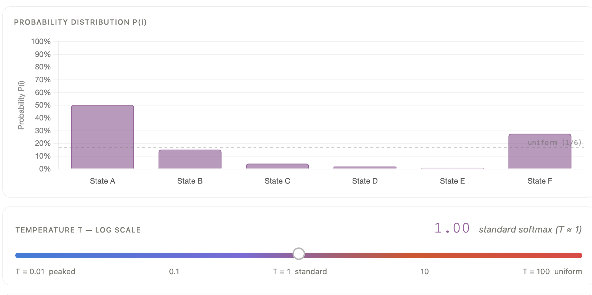
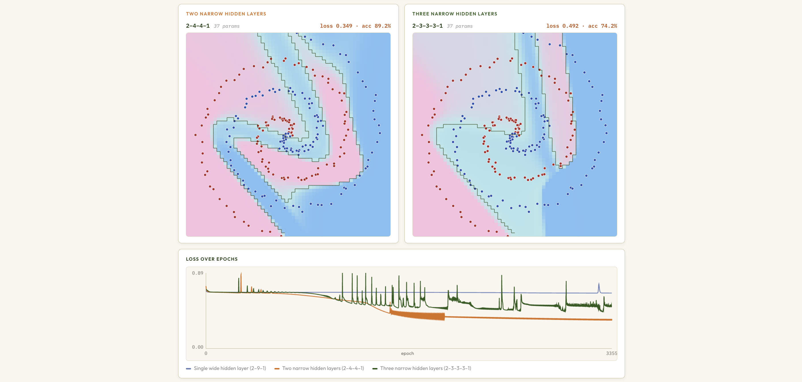
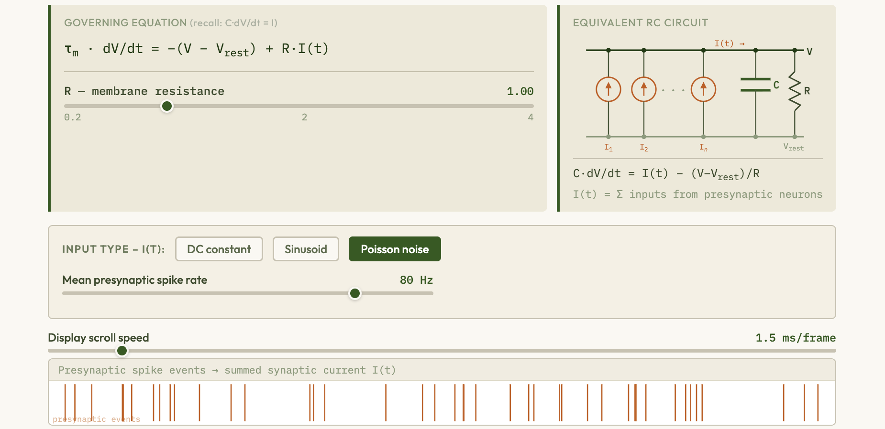
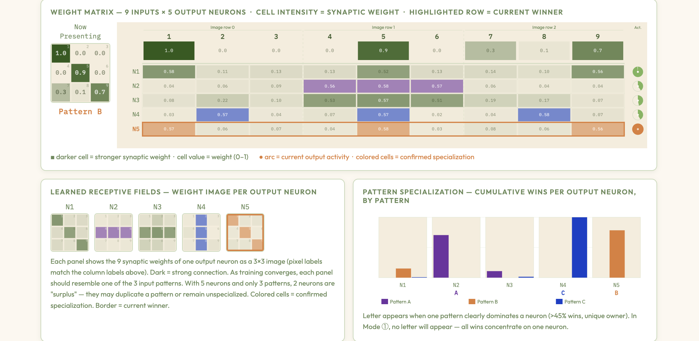
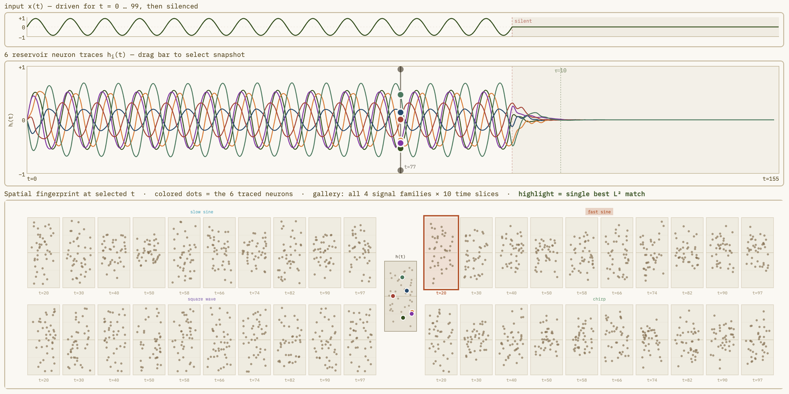
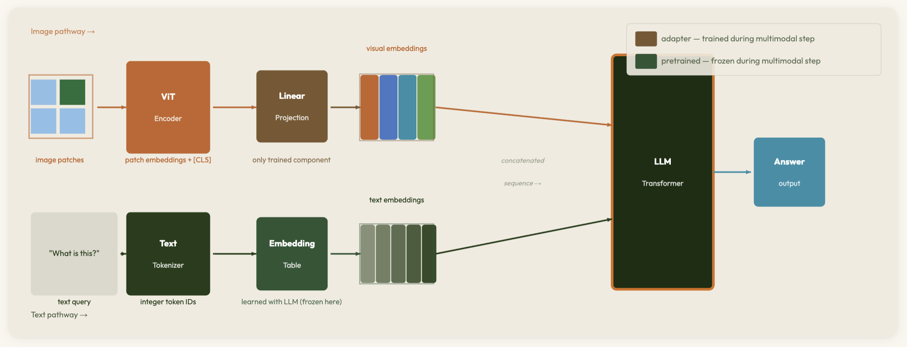

INFO 557: Neural Networks – Course Visualizations
Supplemental visualizations for Greg Chism, Assistant Professor of Practice at the University of Arizona, College of Information Science. Course: INFO 557: Neural Networks — covering neural network architectures, deep learning theory, and optimization.
Probabilistic Foundations
-

Softmax Temperature Explorer — interactive explainer
Adjust the temperature of the softmax (Gibbs) distribution and watch how it interpolates between uniform exploration and greedy exploitation — the same mechanism underlying SA acceptance and MaxEnt methods.
-

Maximum Entropy (MaxEnt) — interactive explainer
Explore how the Maximum Entropy principle selects the least-assumptive distribution consistent with known constraints — and how this derivation produces the Gibbs/softmax distribution that underlies SA acceptance probabilities.
-

Boltzmann Distribution via Random Exchange — interactive explainer
N agents repeatedly trade random amounts of a conserved quantity — watch any starting distribution relax to the maximum-entropy Boltzmann (exponential) equilibrium, confirming the statistical mechanics origin of the Gibbs distribution.
Neural Networks
-

Single-Layer Perceptron — Neuron & Lever Explainer
Animated connection between the biological neuron and the linear classifier — adjust synaptic weights and inputs to watch the decision boundary shift in real time.
-

Radial Basis Function Neural Network — interactive explorer
Adjust centers, widths, and weights of radial kernels to see how an RBF network builds up an approximation — making the hidden-layer geometry of this bio-inspired architecture tangible.
-

Multi-Layer Perceptron & Backpropagation — interactive explorer
Explore how hidden layers let a network solve XOR and other non-linearly separable tasks, and trace backpropagation as gradient flow through the network's architecture.
-

MVT Explorer — Marginal Value Theorem — interactive explainer
Drag the tangent line to find optimal patch residence times under Charnov's Marginal Value Theorem — and see how the habitat-wide rate R* functions as an opportunity cost of time, mirroring the temporal discount rate in the reinforcement learning Bellman equation.
-

Autoencoder Explorer — interactive explainer
Train a deep autoencoder on MNIST-like digit data and watch the 2-D bottleneck encoding cluster by class — a hands-on demonstration of unsupervised representation learning with neural networks.
-

Spiking Neural Networks — interactive explorer
Simulate leaky integrate-and-fire neurons, visualize spike trains and membrane potentials, and explore Spike-Timing-Dependent Plasticity (STDP) — the biologically plausible Hebbian learning rule linking neural firing timing to synaptic weight changes.
-

Ferroelectric Memristor Synapses & Crossbar Learning — interactive explainer
Explore how ferroelectric memristor synapses in a crossbar array implement Spike-Timing-Dependent Plasticity (STDP) — adjust pulse timings, device parameters, and network architecture to watch Hebbian learning emerge from nanoscale physics.
-

Hebbian Learning & Competitive Clustering — interactive explainer
Explore how Hebbian synaptic update rules combined with lateral inhibition drive winner-take-all competition, organizing input patterns into distinct clusters without supervision — bridging the STDP memristor demo to classical unsupervised ANN learning.
-

Recurrent Networks & Temporal Supervision Explorer — interactive explainer
Trace the evolution from Time-Delay Neural Networks to RNNs with output feedback and autoregressive latent-state RNNs, train them via Backpropagation Through Time (BPTT), and follow a visual guide to gated architectures (LSTM, GRU) that solve the vanishing-gradient problem.
-

Reservoir Computing — Echo State Network Explorer
Adjust spectral radius, sparsity, and input scaling to watch a fixed random reservoir project inputs into a high-dimensional state space where a simple linear readout can separate complex dynamics — the key insight of reservoir computing via Echo State Networks.
-

Transformer Architecture Explorer — interactive explainer
Step through scaled dot-product self-attention, multi-head attention, positional encodings, and Vision Transformers (ViT) with live attention-map and patch-embedding visualizations.
-

Toward Multimodal AI — interactive explainer
Trace the path from CNNs and patch embeddings to Vision Transformers, CLIP-style contrastive pretraining, and modern multimodal architectures — showing how a single attention mechanism unifies vision and language.
-

Activation Functions — Interactive Explorer
Adjust parameters for ReLU, Leaky ReLU, ELU, Swish, Sigmoid, Tanh, Maxout, and Linear units — see the function and derivative plots side by side with annotations on saturation, vanishing gradients, and when to use each.
-

Gradient Descent & Cost Functions — Interactive Explorer
Animate gradient descent on 2D loss landscapes for MSE, MAE, Cross-Entropy, and Hinge Loss — tune learning rate, compare Batch GD, SGD, and Mini-Batch, and discover saddle points, flat regions, and vanishing gradients live.
-

Backpropagation & Computational Graphs — interactive explorer
Step through forward and backward passes on a live computational graph — watch values propagate forward and gradients flow back via the chain rule with real numbers, across three network examples: single neuron, XOR network, and 3-layer deep network.
-

L1 & L2 Regularization — interactive explorer
Visualize how L1 and L2 penalties shape weight distributions, decision boundaries, and optimization paths — and why L1 produces sparsity while L2 does not.